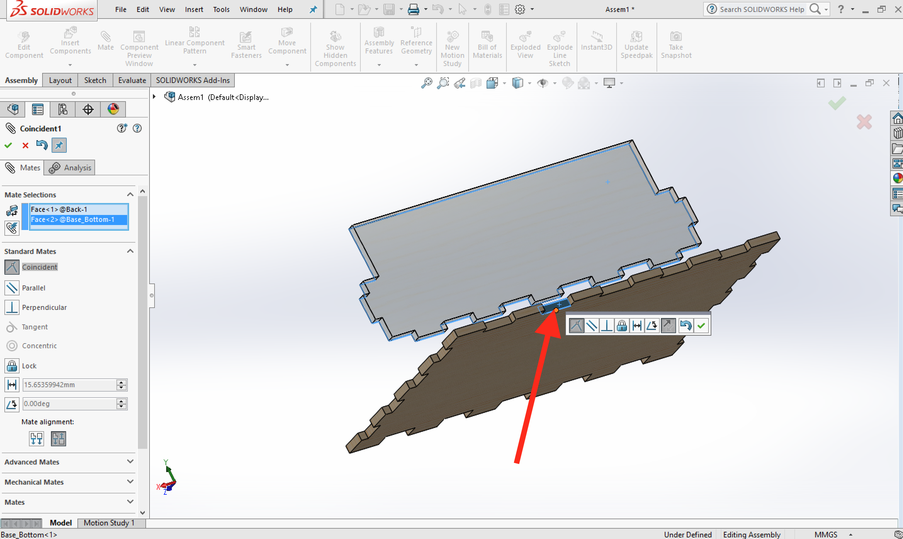

A Project Storage Box
Table of Contents
1 Ahoy, Mate-y
Learn It
- In SolidWorks, an assembly is a collection of 3D parts.
- Just like sketches, assemblies need to be fully defined, so that the distances between parts are known by the software,
- To accomplish this we use
mates. It's rather like building a jigsaw puzzle, but in three dimensions. - This is the assembly we're going to make. I've added some materials to mine to give it the look of a wood finish and added a background image, but this is just cosmetic…
Design It
- Open up SolidWorks.
- Create a new document.
- This time, we're going to choose an
Assembly

- Click on Browse and find the Base part you made in a previous lesson.

- Click in the main window space to place the part.

- Download these parts into your Documents area to get you started:
- Next we need to insert the
Base_Backinto our assembly. - Click on the
Insert Componentsbutton in the tool bar (located in the 'Assembly' Tab), select yourBase_Backpart and place it near the back of the model with a click.
- Now the parts can be mated together.
- Mating involves matching
facesthat arecoincidentwith each other. This can mean they are either touching each other (as if glued together) or perfectly inline with each other. Usually you'll need 3 mates to fully define the position of any part. This will lock the part on the X, Y and Z axis. - At the top of the SolidWorks window, click the 'Mate' tool.
- Click once to select the inner face of the back of the box.
- Click and hold the middle mouse button to spin the model (or use the arrow keys on the keyboard) to reveal the back of the base of the box.
- Click to select the inner face of either of one of the finger joints on the base of the box. You'll probably see the part move slightly as the parts are mated.
- The software will default to a coincident relationship, so we can just click the green tick.

- That's one mate completed… Two more to go.
- Select the outside face of one of the finger joints along the side of the base of the box, then select the outermost face of the
base_backpart. - Click the green tick like last time to mate the parts on this axis.
- Lastly we need to select the matching faces of the bottom of the base and the back part.
- Flip the model upside down (clicking and holding the middle mouse bottom again).
- Select the bottom of the base,
- Select one of the bottom faces of the back part.
- Click the green tick to confirm the mate.
- You should now see that your assembley has been fully defined.
2 Mating a part independently
Badge It - Silver
- To earn the Silver Best Mate badge
- Download and import the front catch part.
- Mate it to the front of base so that your assembly is fully defined.
- Screen shot your assembly for your portfolio.
- IMPORTANT: Note that this will sit inside the finger joints when finished and leave a slight gap. This is because there is another part to sit in front of it; the gold badge takes care of this.
Badge It - Gold
- To earn the Gold Best Mate badge
- Import the side part of the box and the front of the box.
- Mate these part correctly to form the next parts of the box.
- You should now have a completed box that is missing a lid.
Badge It - Platinum
- To earn the Platinum Best Mate badge
- Import the remaining parts for the lid and hinge one at a time and mate them together to form a completed box. The parts can be downloaded here:
- You might need your teacher's assistance to mate the lid parts to the box body. It requires you to use a special type of mate, called a 'Hinge Mate'. You may be able to search the web to research how to use that feature.
- You should now have a completed box.